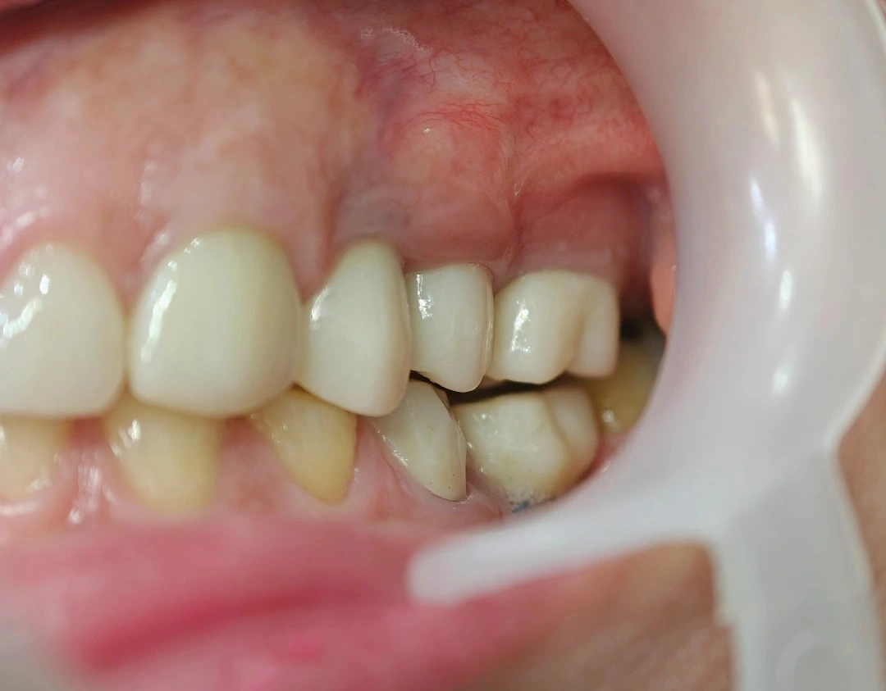

Chairside 31
دندانی که فانکشن ندارد، صرفاً یک فضای اشغالشده است

بیمار برای زخمِ لثه آمده بود، ولی کاری که در این ویزیت لازم بود درمانِ زخم نبود؛ پیدا کردنِ دلیلی بود که بیمار را وادار میکرد لقمه را به سمتی ببرد که در مقابلش دندانی نیست.
شرحِ مراجعه. بیمار با شکایت از زخم مکرر در لثهٔ خلفِ دندان ۶ بالا مراجعه کرد. در معاینه بالینی، زخمی روی لثهٔ ماگزیلا دقیقاً در مقابل دندان ۷ پایین مشهود بود. بیمار در نواحی ۵ و ۶ پایین دارای روکشهای ایمپلنت بود.
ارزیابی. کراونهای ایمپلنتِ ۵ و ۶ پایین بهشدت کوتاه ساخته شده و در وضعیت اینفرا-اکلوژن قرار دارند. در نتیجه، بیمار عملاً امکان جویدن در این ناحیه را ندارد و برای جبران این نقص، ناخودآگاه لقمهٔ غذا را به سمت خلف (ناحیه دندان ۷) هدایت میکند. جویدن غذا بین دندان ۷ پایین و لثهٔ بیدندانیِ فک بالا منجر به ترومای مداومِ بافتی و ایجاد زخم شده است.
از سوی دیگر، دندان ۷ پایین به دلیل فقدان آنتاگونیست، دچار رویش بیشازحد (Supra-eruption) شده و فضای رستوریتیو فک بالا را کاملاً از بین برده است. همکار قبلی به دلیل «حیف بودن» دندان ۷ سالم، از تراش و کوتاه کردن آن برای ایجاد فضا امتناع ورزیده و در نتیجه، ناحیهٔ ۷ بالا بدون ایمپلنت و دندان مقابل رها شده است.
تصمیم و طرح درمان. دندانی که فانکشن ندارد و در اکلوژن مشارکت نمیکند، صرفنظر از سالم بودن تاجش، کاربردی در سیستم جونده ندارد. حفظ وضعیت فعلی این دندان نه تنها کمکی به بیمار نمیکند، بلکه عامل اصلی ترومای بافت نرم است.
طرح درمان اصلاحی شامل مراحل زیر است:
- اصلاح فانکشن قدامیتر: تعویض روکشهای ایمپلنت ۵ و ۶ پایین و ساخت روکشهای جدید با ارتفاع اکلوزال مناسب، تا بیمار بتواند سیکل جویدن را در این ناحیه انجام دهد و از شیفت دادن غذا به خلف جلوگیری شود.
- بازپسگیری فضای رستوریتیو: آمادهسازی دندان ۷ پایین شامل تراش و کوتاه کردن تاج (و در صورت نیاز، درمان ریشه انتخابی) به میزانی که فضای رستوریتیوِ کافی برای فک بالا تامین گردد.
- تکمیل اکلوژن: قرار دادن ایمپلنت در ناحیه ۷ بالا و ساخت روکش برای برقراری تماس اکلوزال صحیح با دندان ۷ پایین (احیای فانکشن).
️Clinical Tip: ارزش بیومکانیکی یک دندان صرفاً به «دستنخورده بودن» آن نیست، بلکه به نقشی است که در سیستم جونده ایفا میکند. دندانِ فاقد آنتاگونیست که اکلوژنی ندارد و فضای پروتزی فک مقابل را غصب کرده است، باید برای احیای کل سیستم اصلاح شود؛ حتی اگر این اصلاح به قیمت تراش وسیع یا درمان ریشهٔ یک دندان وایتال تمام شود. دندانِ بدون فانکشن عملاً به درد نمیخورد.
محتوای این صفحه برای استفادهٔ آموزشی دندانپزشکان و دانشجویان دندانپزشکی تهیه شده است.